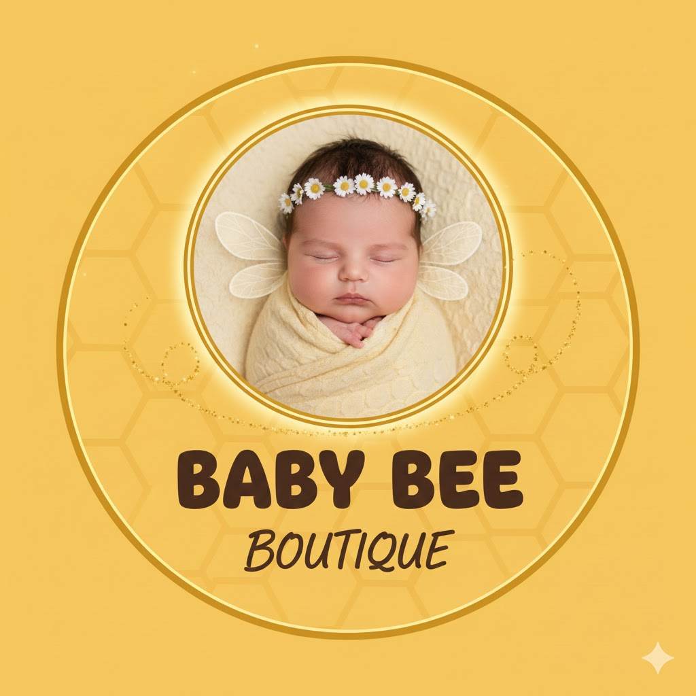
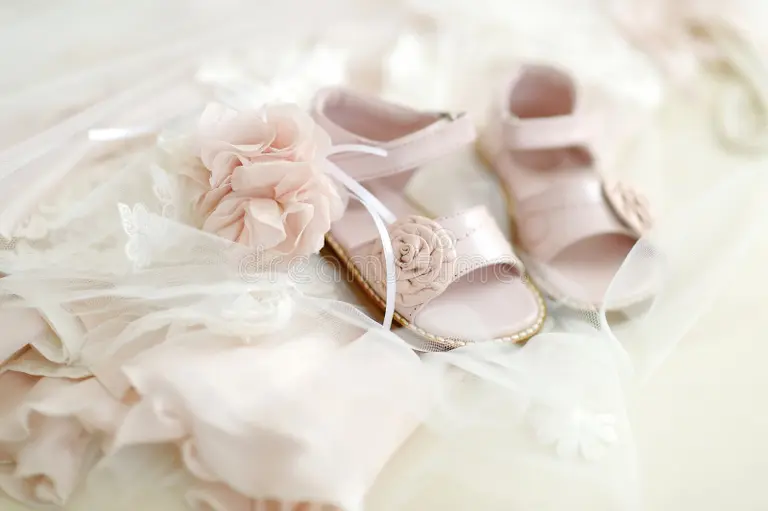
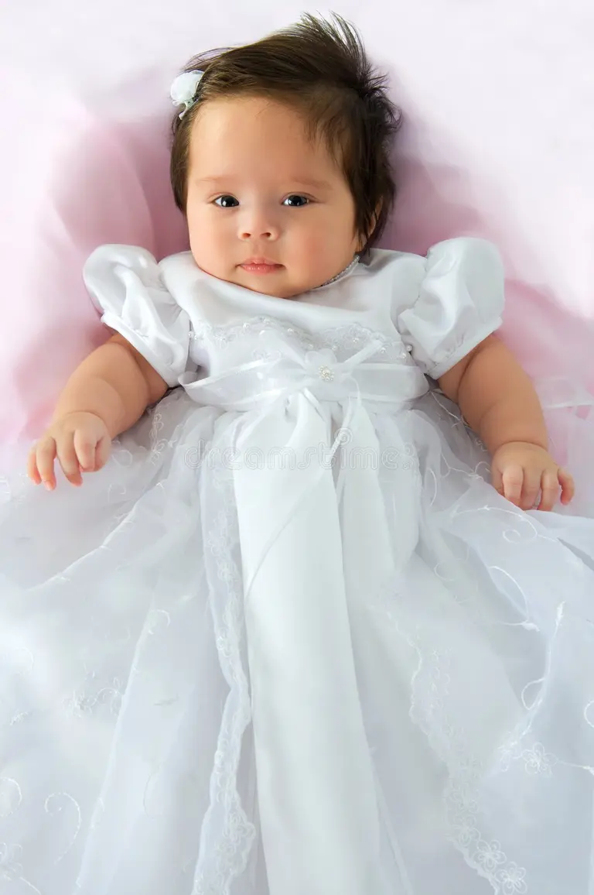
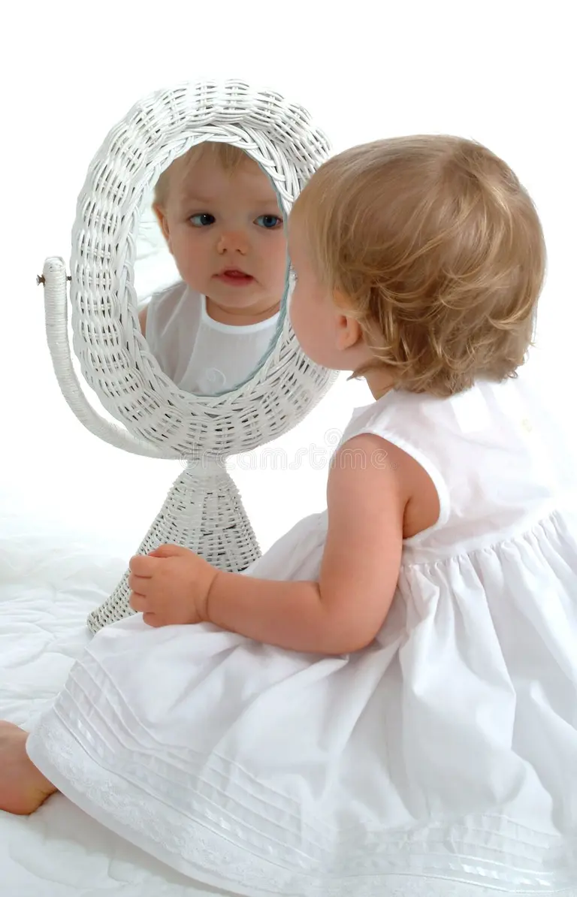
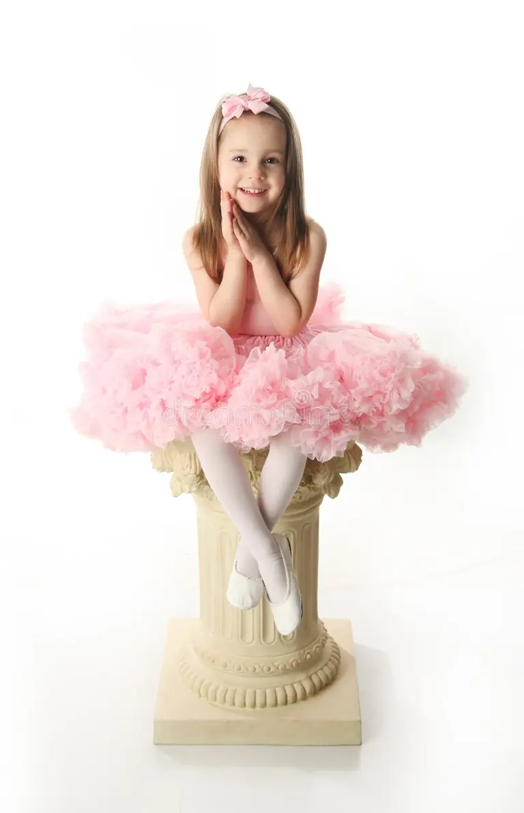

Welcome to Baby Bee Boutique, a lovingly crafted space dedicated to celebrating the magic, innocence, and wonder of childhood.Founded with a simple dream — to make every baby feel beautifully comfortable and every parent feel confidently happy — Baby Bee Boutique has grown into a trusted destination for premium baby clothing and adorable essentials.At Baby Bee Boutique, we believe that babies deserve the best. Their skin is soft, delicate, and sensitive, so every fabric, stitch, and design we create is thoughtfully chosen to provide exceptional comfort and care. Our collections are designed to be safe on skin, gentle to touch, stylish to see, and durable for everyday adventures.

Every baby is unique, and so are their needs. That’s why we focus on: ✨ Softness – Fabrics that are smooth, breathable, and safe for sensitive skin. ✨ Quality – Clothing that lasts long, feels luxurious, and can be passed on with love. ✨ Design – Styles that make your little one look adorable, elegant, and camera-ready. ✨ Care – Products made with love, patience, and attention to detail.We create clothing that lets babies move freely, explore happily, and feel snug all day. Whether it’s a \ cozy romper, a playful frock, a festive traditional dress, or a dreamy photoshoot outfit, every piece is made to celebrate joy.


Parents trust Baby Bee Boutique because we offer more than just clothes
– we offer a warm experience filled with:
Premium-quality materials.
Thoughtfully stitched designs.
Skin-friendly, safe fabrics.
Durable clothing for everyday use.
Unique and stylish collections.
Affordable pricing for every family.
New arrivals updated regularly.
Our products are crafted to make dressing up fun, easy,
and joyful for both babies and parents.

To every parent, guardian, and baby who has supported our journey — thank you. Your love encourages us to grow, create, and serve with even more dedication.Baby Bee Boutique is not just a store; it’s a family, a memory, and a small part of your baby’s beautiful journey. Whether it's a celebration, a photoshoot, or just a regular day, Baby Bee Boutique is here to make every moment picture-perfect.We promise to continue bringing you the best, staying true to our values, and always listening to what parents need.💛🐝